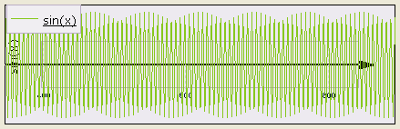
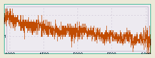
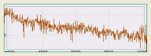

Viewing data
Viewed data
With this program you can see your data as colored pixels in the screen, namely as rendered tracks. This representation often involves a further quantization of your data (the more your screen resolution [pix/cm] is high, the higher is the Nyquist frequency of the quantization). This means that you must always consider carefully what you see (read: aliasing); for example, do you believe that a current can really have the following behaviour?
We can experiment this fact resizing plot window (this alters the pixels physical dimensions) or playing with theSampPerPix option.
Consider for example this track:

In this case the data sampling interval is much less the pixels width, so the rendered track appears as a filled band. Now setSampPerPix
to 1, forcing MattPlot to render only
one sample per pixel:

This undersampling decreases data sampling frequency, and so can cause aliasing.Remember that MattPlot computations and measures are always performed on internal data and not on their screen representation.